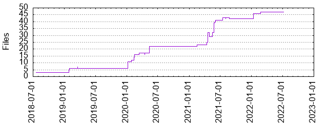

Files
General
Activity
Authors
Files
Lines
Tags
Total files
47
Total lines
6539
Average file size
5961.13 bytes
File count by date

Extensions
Extension
Files (%)
Lines (%)
Lines/file
10 (21.28%)
605 (9.25%)
60
BUILD
1 (2.13%)
43 (0.66%)
43
awk
1 (2.13%)
38 (0.58%)
38
el
7 (14.89%)
4344 (66.43%)
620
md
2 (4.26%)
51 (0.78%)
25
org
25 (53.19%)
1430 (21.87%)
57
yaml
1 (2.13%)
28 (0.43%)
28